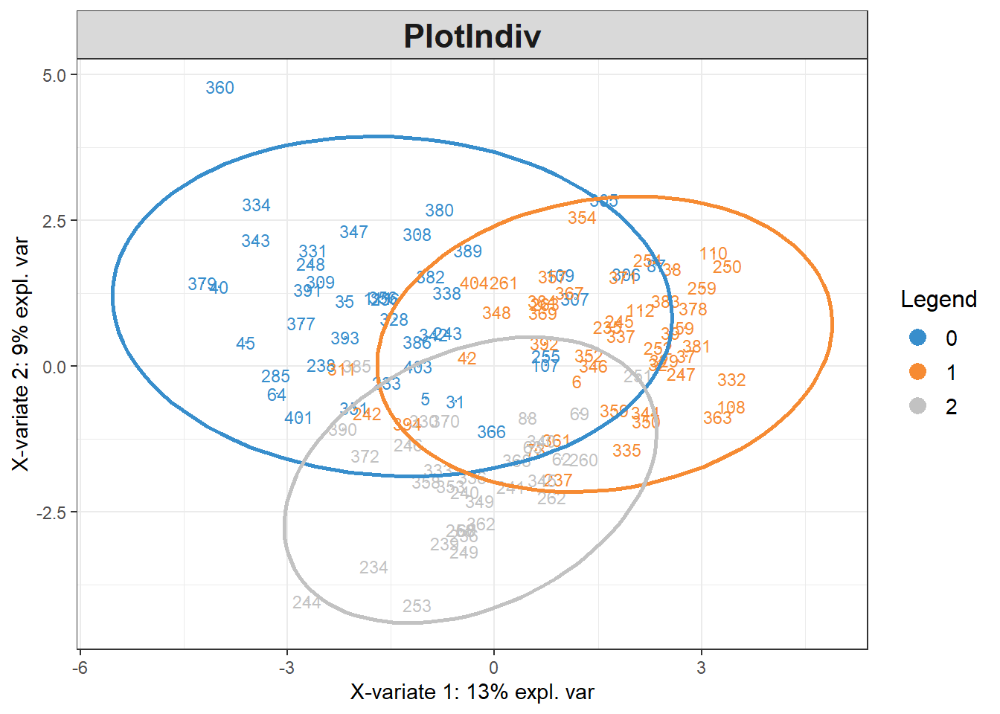
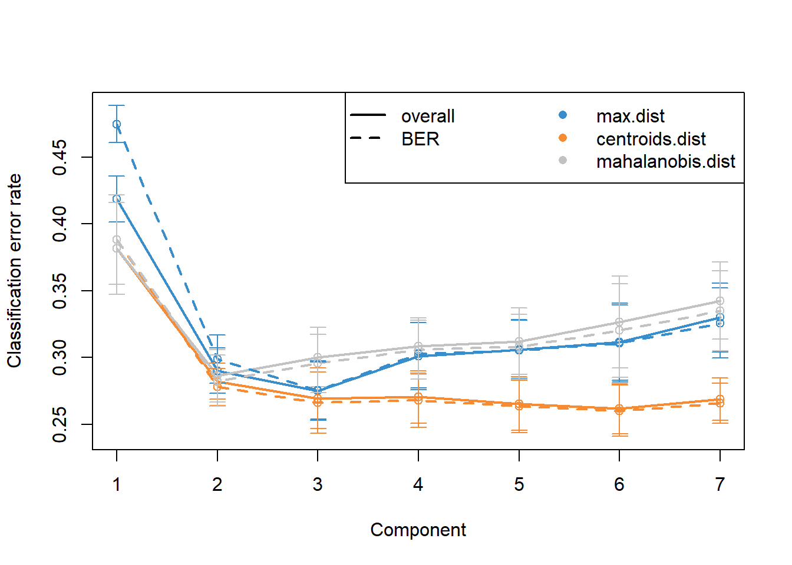
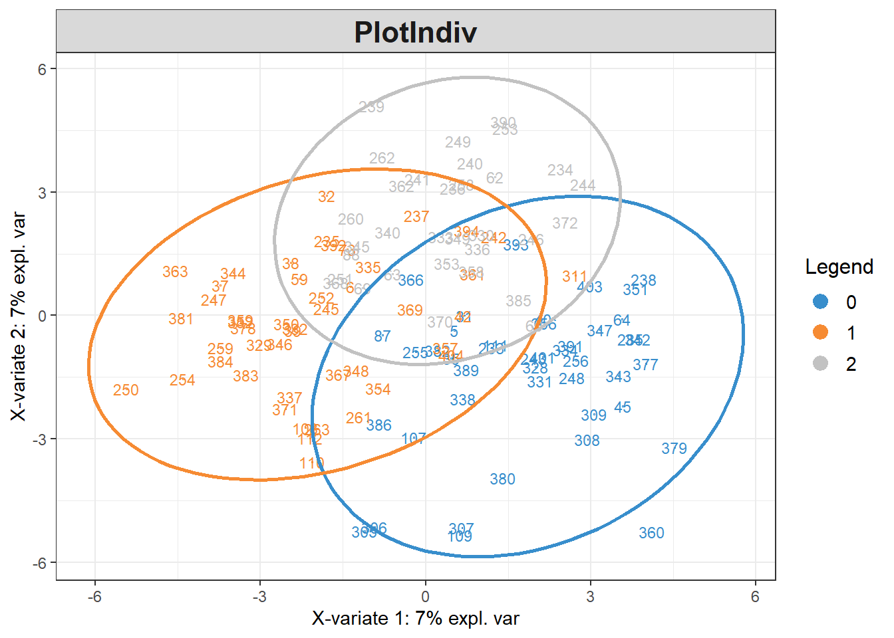

Chapter 3 Finding peaks discriminating callow and mature F. sanguinea workers
# devtools::install_github("mixOmicsTeam/mixOmics", ref = "143d31f9629bc83f1f27272ba6b7a2aaef0ee0e8")
suppressMessages({
library(sangchem)
library(dplyr)
library(mixOmics)
})
# load data
data("development_data")
data("mass_spectra_data")
DA_data <- dplyr::filter(development_data, caste=="worker", !remarks %in% c("aggression actor", "aggression target", "queenless colony")) %>%
dplyr::select(colony, species, callow, census_date, chromatogram_ID, sang_prop) %>%
split(list(.$colony, .$census_date), drop=TRUE) %>%
lapply(function(x){if(sum(x$callow)==0) return(NULL); x}) %>%
{function(x) x[!unlist((lapply(x, is.null)))]}() %>%
purrr::map2(seq_along(.), function(x,y){x$group <- y; x}) %>%
{function(x) do.call(rbind, x)}()
Y <- (DA_data$callow==1) + (DA_data$species=="F. sanguinea")
peak_prop <- peak_proportions_table(mass_spectra_data[mass_spectra_data$chromatogram_ID %in% DA_data$chromatogram_ID,])
peak_prop <- peak_prop[match(DA_data$chromatogram_ID, rownames(peak_prop)),]
# remove absent peaks
peak_prop <- peak_prop[,apply(peak_prop,2,function(x) sum(x)>0)]
peak_prop <- freq_abun_QC(peak_prop, freq_cutoff = 0.3, abundance_cutoff = 0.005)
# replace zeros with a small number before transformation
peak_prop[peak_prop==0] <- 10^-16
# apply central log ratio transformation
peak_transformed <- t(apply(peak_prop, 1, clr_transformation))
PCA_callow_discr <- prcomp(peak_transformed, scale. = TRUE)
PCA_callow_discr$x <- withinVariation(PCA_callow_discr$x, data.frame(DA_data$group))## Splitting the variation for 1 level factor.set.seed(1342)
discr_analysis_callow <- splsda(PCA_callow_discr$x, Y=Y ,multilevel=DA_data$group,
ncomp=7, scale = FALSE)## Splitting the variation for 1 level factor.
perf.discr_analysis_callow <- perf(discr_analysis_callow,
validation = "Mfold",
folds = 4,
progressBar = FALSE,
auc = TRUE,
nrepeat = 30,
scale = FALSE)## Splitting the variation for 1 level factor.
selected_n <- perf.discr_analysis_callow$choice.ncom["overall", "max.dist"]
discr_analysis_callows_tuned <- tune.splsda(PCA_callow_discr$x,
Y=Y,
nrepeat = 30,
folds = 4,
ncomp = selected_n,
test.keepX = seq(1:dim(PCA_callow_discr$x)[2]),
dist = 'max.dist',
validation = 'Mfold',
measure = "BER",
progressBar = FALSE,
scale = FALSE)
selected_n <- discr_analysis_callows_tuned$choice.ncomp$ncomp
discr_analysis_callows_res <- splsda(PCA_callow_discr$x,Y=Y,
multilevel= DA_data$group,
keepX=discr_analysis_callows_tuned$choice.keepX,
ncomp=selected_n,
scale = FALSE)## Splitting the variation for 1 level factor.
Now we are ready to determine the marker peaks. To do so, we will calculate the effect of each peak on the final classification. We generate input matrix populated with all ones and then we increment input for one peak at a time.
3.1 Determining callow markers
ones_matrix <- matrix(1, nrow = ncol(peak_prop),ncol= ncol(peak_prop))
colnames(ones_matrix) <- rownames(ones_matrix) <- colnames(peak_prop)
unit_input <- diag(rep(1, ncol(peak_prop)))
incremented_matrix <- ones_matrix + unit_input
ones_matrix <- ones_matrix[1,,drop=FALSE]
ones_matrix <- ones_matrix/ncol(ones_matrix)
incremented_matrix <- apply(incremented_matrix, 2, function(x) x/sum(x))
res1 <- calculate_SII(incremented_matrix, discr_analysis_callows_res, PCA_callow_discr, predicted_category=3)
res2 <- calculate_SII(ones_matrix, discr_analysis_callows_res, PCA_callow_discr, predicted_category=3)
res <- res1
res$predicted_species = res1$predicted_species - res2$predicted_species
res <- res[order(res$predicted_species),]
print(res)## chromatogram_ID predicted_species
## 90 90 -4.159219e-03
## 47 47 -3.588709e-03
## 107 107 -2.997965e-03
## 109 109 -2.444410e-03
## 42 42 -2.150768e-03
## 30 30 -1.891202e-03
## 35 35 -1.877074e-03
## 57 57 -1.855527e-03
## 102 102 -1.853874e-03
## 14 14 -1.699499e-03
## 81 81 -1.659301e-03
## 24 24 -1.412691e-03
## 54 54 -1.359107e-03
## 77 77 -1.242064e-03
## 20 20 -1.156125e-03
## 94 94 -1.146213e-03
## 50 50 -1.082947e-03
## 75 75 -9.948903e-04
## 108 108 -9.403595e-04
## 95 95 -9.397279e-04
## 101 101 -7.896210e-04
## 55 55 -7.670304e-04
## 9 9 -6.635095e-04
## 5 5 -6.345851e-04
## 106 106 -5.244650e-04
## 52 52 -2.088747e-04
## 68 68 -1.867320e-04
## 83 83 -9.406790e-05
## 76 76 -7.309044e-05
## 85 85 -2.989869e-05
## 53 53 1.238204e-04
## 41 41 1.288446e-04
## 21 21 1.535508e-04
## 15 15 1.589963e-04
## 23 23 2.234896e-04
## 31 31 2.378793e-04
## 63 63 3.424210e-04
## 7 7 5.624342e-04
## 28 28 5.631769e-04
## 56 56 7.109498e-04
## 92 92 9.014744e-04
## 58 58 9.516242e-04
## 59 59 1.355974e-03
## 51 51 1.399106e-03
## 8 8 1.416204e-03
## 36 36 1.537843e-03
## 32 32 1.787573e-03
## 27 27 1.884739e-03
## 16 16 2.243418e-03
## 12 12 2.466785e-03
## 29 29 2.490606e-03
## 43 43 2.698657e-03
## 33 33 2.712353e-03
## 49 49 2.930750e-03
## 71 71 3.051945e-03
## 88 88 3.475691e-03
## 37 37 3.913239e-033.2 Determining mature F. sanguinea markers
res1 <- calculate_SII(incremented_matrix, discr_analysis_callows_res, PCA_callow_discr, predicted_category=2)
res2 <- calculate_SII(ones_matrix, discr_analysis_callows_res, PCA_callow_discr, predicted_category=3)
res <- res1
res$predicted_species = res1$predicted_species - res2$predicted_species
res <- res[order(res$predicted_species),]
print(res)## chromatogram_ID predicted_species
## 27 27 1.333255
## 24 24 1.333760
## 7 7 1.333850
## 37 37 1.333895
## 29 29 1.334982
## 16 16 1.335204
## 14 14 1.335230
## 49 49 1.335321
## 47 47 1.335777
## 68 68 1.336314
## 33 33 1.336334
## 8 8 1.337056
## 32 32 1.337252
## 12 12 1.337269
## 88 88 1.337280
## 71 71 1.337568
## 50 50 1.337756
## 42 42 1.337796
## 35 35 1.337810
## 59 59 1.337832
## 5 5 1.337877
## 23 23 1.337884
## 58 58 1.337916
## 36 36 1.338088
## 55 55 1.338092
## 20 20 1.338095
## 31 31 1.338265
## 53 53 1.338350
## 15 15 1.338432
## 81 81 1.338533
## 9 9 1.338546
## 41 41 1.338581
## 54 54 1.338744
## 90 90 1.338794
## 63 63 1.338993
## 28 28 1.339028
## 75 75 1.339121
## 51 51 1.339178
## 95 95 1.339235
## 107 107 1.339243
## 57 57 1.339366
## 77 77 1.339409
## 76 76 1.339623
## 43 43 1.339661
## 92 92 1.339673
## 56 56 1.339717
## 101 101 1.339720
## 21 21 1.339790
## 83 83 1.339822
## 85 85 1.339827
## 52 52 1.339842
## 106 106 1.339848
## 108 108 1.339865
## 94 94 1.339897
## 109 109 1.340641
## 30 30 1.340932
## 102 102 1.341676